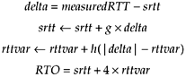
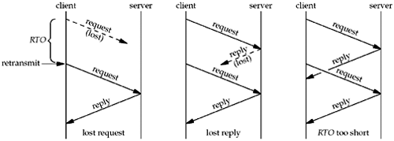

| [ Team LiB ] |
|
22.5 Adding Reliability to a UDP ApplicationIf we are going to use UDP for a request-reply application, as mentioned in the previous section, then we must add two features to our client:
These two features are part of most existing UDP applications that use the simple request-reply paradigm: DNS resolvers, SNMP agents, TFTP, and RPC, for example. We are not trying to use UDP for bulk data transfer; our intent is for an application that sends a request and waits for a reply.
Adding sequence numbers is simple. The client prepends a sequence number to each request and the server must echo this number back to the client in the reply. This lets the client verify that a given reply is for the request that was issued. The old-fashioned method for handling timeout and retransmission was to send a request and wait for N seconds. If no response was received, retransmit and wait another N seconds. After this had happened some number of times, the application gave up. This is an example of a linear retransmit timer. (Figure 6.8 of TCPv1 shows an example of a TFTP client that uses this technique. Many TFTP clients still use this method). The problem with this technique is that the amount of time required for a datagram to make a round trip on a network can vary from fractions of a second on a LAN to many seconds on a WAN. Factors affecting the RTT are distance, network speed, and congestion. Additionally, the RTT between a client and server can change rapidly with time, as network conditions change. We must use a timeout and retransmission algorithm that take into account the actual RTTs that we measure along with the changes in the RTT over time. Much work has been focused on this area, mostly relating to TCP, but the same ideas apply to any network application. We want to calculate the RTO to use for every packet that we send. To calculate this, we measure the RTT: the actual round-trip time for a packet. Every time we measure an RTT, we update two statistical estimators: srtt is the smoothed RTT estimator and rttvar is the smoothed mean deviation estimator. The latter is a good approximation of the standard deviation, but easier to compute since it does not involve a square root. Given these two estimators, the RTO to use is srtt plus four times rttvar. [Jacobson 1988] provides all the details of these calculations, which we can summarize in the following four equations:  delta is the difference between the measured RTT and the current smoothed RTT estimator (srtt). g is the gain applied to the RTT estimator and equals 1/8. h is the gain applied to the mean deviation estimator and equals 1/4.
Another point made in [Jacobson 1988] is that when the retransmission timer expires, an exponential backoff must be used for the next RTO. For example, if our first RTO is 2 seconds and the reply is not received in this time, then the next RTO is 4 seconds. If there is still no reply, the next RTO is 8 seconds, and then 16, and so on. Jacobson's algorithms tell us how to calculate the RTO each time we measure an RTT and how to increase the RTO when we retransmit. But, a problem arises when we have to retransmit a packet and then receive a reply. This is called the retransmission ambiguity problem. Figure 22.5 shows the following three possible scenarios when our retransmission timer expires: Figure 22.5. Three scenarios when retransmission timer expires.
When the client receives a reply to a request that was retransmitted, it cannot tell to which request the reply corresponds. In the example on the right, the reply corresponds to the original request, while in the two other examples, the reply corresponds to the retransmitted request. Karn's algorithm [Karn and Partridge 1991] handles this scenario with the following rules that apply whenever a reply is received for a request that was retransmitted:
It is not hard to take Karn's algorithm into account when coding our RTT functions, but it turns out that an even better and more elegant solution exists. This solution is from the TCP extensions for "long fat pipes" (networks with either a high bandwidth, a long RTT, or both), which are documented in RFC 1323 [Jacobson, Braden, and Borman 1992]. In addition to prepending a sequence number to each request, which the server must echo back, we also prepend a timestamp that the server must also echo. Each time we send a request, we store the current time in the timestamp. When a reply is received, we calculate the RTT of that packet as the current time minus the timestamp that was echoed by the server in its reply. Since every request carries a timestamp that is echoed by the server, we can calculate the RTT of every reply we receive. There is no longer any ambiguity at all. Furthermore, since all the server does is echo the client's timestamp, the client can use any units desired for the timestamps and there is no requirement at all that the client and server have synchronized clocks. ExampleWe will now put all of this together in an example. We start with our UDP client main function from Figure 8.7 and just change the port number from SERV_PORT to 7 (the standard echo server, Figure 2.18). Figure 22.6 is the dg_cli function. The only change from Figure 8.8 is to replace the calls to sendto and recvfrom with a call to our new function, dg_send_recv. Before showing our dg_send_recv function and the RTT functions it calls, Figure 22.7 shows an outline of how we add reliability to a UDP client. All functions beginning with rtt_ will be shown shortly. Figure 22.6 dg_cli function that calls our dg_send_recv function.rtt/dg_cli.c
1 #include "unp.h"
2 ssize_t Dg_send_recv(int, const void *, size_t, void *, size_t,
3 const SA *, socklen_t);
4 void
5 dg_cli(FILE *fp, int sockfd, const SA *pservaddr, socklen_t servlen)
6 {
7 ssize_t n;
8 char sendline[MAXLINE], recvline[MAXLINE + 1];
9 while (Fgets(sendline, MAXLINE, fp) != NULL) {
10 n = Dg_send_recv(sockfd, sendline, strlen(sendline),
11 recvline, MAXLINE, pservaddr, servlen);
12 recvline[n] = 0; /* null terminate */
13 Fputs(recvline, stdout);
14 }
15 }
Figure 22.7 Outline of RTT functions and when they are called.
static sigjmp_buf jmpbuf;
{
. . .
form request
signal(SIGALRM, sig_alrm); /* establish signal handler */
rtt_newpack(); /* initialize rexmt counter to 0 */
sendagain:
sendto();
alarm(rtt_start()); /* set alarm for RTO seconds */
if (sigsetjmp(jmpbuf, 1) != 0) {
if (rtt_timeout()) /* double RTO, retransmitted enough? */
give up
goto sendagain; /* retransmit */
}
do {
recvfrom();
} while (wrong sequence#);
alarm(0); /* turn off alarm */
rtt_stop(); /* calculate RTT and update estimators */
process reply
. . .
}
void
sig_alrm(int signo)
{
siglongjmp(jmpbuf, 1);
}
When a reply is received but the sequence number is not the one expected, we call recvfrom again, but we do not retransmit the request and we do not restart the retransmission timer that is running. Notice in the rightmost example in Figure 22.5 that the final reply from the retransmitted request will be in the socket receive buffer the next time the client sends a new request. That is fine as the client will read this reply, notice that the sequence number is not the one expected, discard the reply, and call recvfrom again. We call sigsetjmp and siglongjmp to avoid the race condition with the SIGALRM signal we described in Section 20.5. Figure 22.8 shows the first half of our dg_send_recv function. 1–5 We include a new header, unprtt.h, shown in Figure 22.10, which defines the rtt_info structure that maintains the RTT information for a client. We define one of these structures and numerous other variables. Define msghdr structures and hdr structure6–10 We want to hide the fact from the caller that we prepend a sequence number and a timestamp to each packet. The easiest way to do this is to use writev, writing our header (the hdr structure), followed by the caller's data, as a single UDP datagram. Recall that the output for writev on a datagram socket is a single datagram. This is easier than forcing the caller to allocate room at the front of its buffer for our use and is also faster than copying our header and the caller's data into one buffer (that we would have to allocate) for a single sendto. But since we are using UDP and have to specify a destination address, we must use the iovec capability of sendmsg and recvmsg, instead of sendto and recvfrom. Recall from Section 14.5 that some systems have a newer msghdr structure with ancillary data, while older systems still have the access rights members at the end of the structure. To avoid complicating the code with #ifdefs to handle these differences, we declare two msghdr structures as static, forcing their initialization to all zero bits by C and then just ignore the unused members at the end of the structures. Initialize first time we are called20–24 The first time we are called, we call the rtt_init function. Fill in msghdr structures25–41 We fill in the two msghdr structures that are used for output and input. We increment the sending sequence number for this packet, but do not set the sending timestamp until we send the packet (since it might be retransmitted, and each retransmission needs the current timestamp). The second half of the function, along with the sig_alrm signal handler, is shown in Figure 22.9. Figure 22.8 dg_send_recv function: first half.
1 #include "unprtt.h"
2 #include <setjmp.h>
3 #define RTT_DEBUG
4 static struct rtt_info rttinfo;
5 static int rttinit = 0;
6 static struct msghdr msgsend, msgrecv; /* assumed init to 0 */
7 static struct hdr {
8 uint32_t seq; /* sequence # */
9 uint32_t ts; /* timestamp when sent */
10 } sendhdr, recvhdr;
11 static void sig_alrm(int signo);
12 static sigjmp_buf jmpbuf;
13 ssize_t
14 dg_send_recv(int fd, const void *outbuff, size_t outbytes,
15 void *inbuff, size_t inbytes,
16 const SA *destaddr, socklen_t destlen)
17 {
18 ssize_t n;
19 struct iovec iovsend[2], iovrecv[2];
20 if (rttinit == 0) {
21 rtt_init(&rttinfo); /* first time we're called */
22 rttinit = 1;
23 rtt_d_flag = 1;
24 }
25 sendhdr.seq++;
26 msgsend.msg_name = destaddr;
27 msgsend.msg_namelen = destlen;
28 msgsend.msg_iov = iovsend;
29 msgsend.msg_iovlen = 2;
30 iovsend[0].iov_base = &sendhdr;
31 iovsend[0].iov_len = sizeof(struct hdr);
32 iovsend[1].iov_base = outbuff;
33 iovsend[1].iov_len = outbytes;
34 msgrecv.msg_name = NULL;
35 msgrecv.msg_namelen = 0;
36 msgrecv.msg_iov = iovrecv;
37 msgrecv.msg_iovlen = 2;
38 iovrecv[0].iov_base = &recvhdr;
39 iovrecv[0].iov_len = sizeof(struct hdr);
40 iovrecv[1].iov_base = inbuff;
41 iovrecv[1].iov_len = inbytes;
Figure 22.9 dg_send_recv function:second half.rtt/dg_send_recv.c
42 Signal(SIGALRM, sig_alrm);
43 rtt_newpack(&rttinfo); /* initialize for this packet */
44 sendagain:
45 sendhdr.ts = rtt_ts(&rttinfo);
46 Sendmsg(fd, &msgsend, 0);
47 alarm(rtt_start(&rttinfo)); /* calc timeout value & start timer */
48 if (sigsetjmp(jmpbuf, 1) != 0) {
49 if (rtt_timeout(&rttinfo) < 0) {
50 err_msg("dg_send_recv: no response from server, giving up");
51 rttinit = 0; /* reinit in case we're called again */
52 errno = ETIMEDOUT;
53 return (-1);
54 }
55 goto sendagain;
56 }
57 do {
58 n = Recvmsg(fd, &msgrecv, 0);
59 } while (n < sizeof(struct hdr) || recvhdr.seq ! = sendhdr.seq);
60 alarm(0); /* stop SIGALRM timer */
61 /* calculate & store new RTT estimator values */
62 rtt_stop(&rttinfo, rtt_ts(&rttinfo) - recvhdr.ts);
63 return (n - sizeof(struct hdr)); /* return size of received datagram */
64 }
65 static void
66 sig_alrm(int signo)
67 {
68 siglongjmp(jmpbuf, 1);
69 }
Establish signal handler42–43 A signal handler is established for SIGALRM and rtt_newpack sets the retransmission counter to 0. Send datagram45–47 The current timestamp is obtained by rtt_ts and stored in the hdr structure prepended to the user's data. A single UDP datagram is sent by sendmsg. rtt_start returns the number of seconds for this timeout and the SIGALRM is scheduled by calling alarm. Establish jump buffer48 We establish a jump buffer for our signal handler with sigsetjmp. We wait for the next datagram to arrive by calling recvmsg. (We discussed the use of sigsetjmp and siglongjmp along with SIGALRM with Figure 20.9.) If the alarm timer expires, sigsetjmp returns 1. Handle timeout49–55 When a timeout occurs, rtt_timeout calculates the next RTO (the exponential backoff) and returns -1 if we should give up, or 0 if we should retransmit. If we give up, we set errno to ETIMEDOUT and return to the caller. Call recvmsg, compare sequence numbers57–59 We wait for a datagram to arrive by calling recvmsg. When it returns, the datagram's length must be at least the size of our hdr structure and its sequence number must equal the sequence number that was sent. If either comparison is false, recvmsg is called again. Turn off alarm and update RTT estimators60–62 When the expected reply is received, the pending alarm is turned off and rtt_stop updates the RTT estimators. rtt_ts returns the current timestamp and the timestamp from the received datagram is subtracted from this, giving the RTT. SIGALRM handler65–69 siglongjmp is called, causing the sigsetjmp in dg_send_recv to return 1. We now look at the various RTT functions that were called by dg_send_recv. Figure 22.10 shows the unprtt.h header. Figure 22.10 unprtt.h header.lib/unprtt.h
1 #ifndef __unp_rtt_h
2 #define __unp_rtt_h
3 #include "unp.h"
4 struct rtt_info {
5 float rtt_rtt; /* most recent measured RTT, in seconds */
6 float rtt_srtt; /* smoothed RTT estimator, in seconds */
7 float rtt_rttvar; /* smoothed mean deviation, in seconds */
8 float rtt_rto; /* current RTO to use, in seconds */
9 int rtt_nrexmt; /* # times retransmitted: 0, 1, 2, ... */
10 uint32_t rtt_base; /* # sec since 1/1/1970 at start */
11 };
12 #define RTT_RXTMIN 2 /* min retransmit timeout value, in seconds */
13 #define RTT_RXTMAX 60 /* max retransmit timeout value, in seconds */
14 #define RTT_MAXNREXMT 3 /* max # times to retransmit */
15 /* function prototypes */
16 void rtt_debug(struct rtt_info *);
17 void rtt_init(struct rtt_info *);
18 void rtt_newpack(struct rtt_info *);
19 int rtt_start(struct rtt_info *);
20 void rtt_stop(struct rtt_info *, uint32_t);
21 int rtt_timeout(struct rtt_info *);
22 uint32_t rtt_ts(struct rtt_info *);
23 extern int rtt_d_flag; /* can be set to nonzero for addl info */
24 #endif /* __unp_rtt_h */
rtt_info structure4–11 This structure contains the variables necessary to time the packets between a client and server. The first four variables are from the equations given near the beginning of this section. 12–14 These constants define the minimum and maximum retransmission timeouts and the maximum number of times we retransmitted. Figure 22.11 shows a macro and the first two of our RTT functions. Figure 22.11 RTT_RTOCALC macro and rtt_minmax and rtt_init functions.lib/rtt.c
1 #include "unprtt.h"
2 int rtt_d_flag = 0; /* debug flag; can be set by caller */
3 /*
4 * Calculate the RTO value based on current estimators:
5 * smoothed RTT plus four times the deviation
6 */
7 #define RTT_RTOCALC(ptr) ((ptr)->rtt_srtt + (4.0 * (ptr)->rtt_rttvar))
8 static float
9 rtt_minmax(float rto)
10 {
11 if (rto < RTT_RXTMIN)
12 rto = RTT_RXTMIN;
13 else if (rto > RTT_RXTMAX)
14 rto = RTT_RXTMAX;
15 return (rto);
16 }
17 void
18 rtt_init(struct rtt_info *ptr)
19 {
20 struct timeval tv;
21 Gettimeofday(&tv, NULL);
22 ptr->rtt_base = tv.tv_sec; /* # sec since 1/1/1970 at start */
23 ptr->rtt_rtt = 0;
24 ptr->rtt_srtt = 0;
25 ptr->rtt_rttvar = 0.75;
26 ptr->rtt_rto = rtt_minmax(RTT_RTOCALC(ptr));
27 /* first RTO at (srtt + (4 * rttvar)) = 3 seconds */
28 }
3–7 The RTT_RTOCALC macro calculates the RTO as the RTT estimator plus four times the mean deviation estimator. 8–16 rtt_minmax makes certain that the RTO is between the upper and lower limits in the unprtt.h header. 17–28 rtt_init is called by dg_send_recv the first time any packet is sent. gettimeofday returns the current time and date in the same timeval structure that we saw with select (Section 6.3). We save only the current number of seconds since the Unix Epoch, which is 00:00:00 January 1, 1970, UTC. The measured RTT is set to 0 and the RTT and mean deviation estimators are set to 0 and 0.75, respectively, giving an initial RTO of 3 seconds. Figure 22.12 shows the next three RTT functions. Figure 22.12 rtt_ts, rtt_newpack, and rtt_start functions.lib/rtt.c
34 uint 32_t
35 rtt_ts(struct rtt_info *ptr)
36 {
37 uint32_t ts;
38 struct timeval tv;
39 Gettimeofday(&tv, NULL);
40 ts = ((tv.tv_sec - ptr->rtt_base) * 1000) + (tv. tv_usec / 1000);
41 return (ts);
42 }
43 void
44 rtt_newpack(struct rtt_info *ptr)
45 {
46 ptr->rtt_nrexmt = 0;
47 }
48 int
49 rtt_start(struct rtt_info *ptr)
50 {
51 return ((int) (ptr->rtt_rto + 0.5)); /* round float to int */
52 /* return value can be used as: alarm(rtt_start(&foo)) */
53 }
34–42 rtt_ts returns the current timestamp for the caller to store as an unsigned 32-bit integer in the datagram being sent. We obtain the current time and date from gettimeofday and then subtract the number of seconds when rtt_init was called (the value saved in rtt_base). We convert this to milliseconds and also convert the microsecond value returned by gettimeofday into milliseconds. The timestamp is then the sum of these two values in milliseconds. The difference between two calls to rtt_ts is the number of milliseconds between the two calls. But, we store the millisecond timestamps in an unsigned 32-bit integer instead of a timeval structure. 43–47 rtt_newpack just sets the retransmission counter to 0. This function should be called whenever a new packet is sent for the first time. 48–53 rtt_start returns the current RTO in seconds. The return value can then be used as the argument to alarm. rtt_stop, shown in Figure 22.13, is called after a reply is received to update the RTT estimators and calculate the new RTO. Figure 22.13 rtt_stop function: updates RTT estimators and calculates new RTO.lib/rtt.c
62 void
63 rtt_stop(struct rtt_info *ptr, uint32_t ms)
64 {
65 double delta;
66 ptr->rtt_rtt = ms / 1000.0; /* measured RTT in seconds */
67 /*
68 * Update our estimators of RTT and mean deviation of RTT.
69 * See Jacobson's SIGCOMM '88 paper, Appendix A, for the details.
70 * We use floating point here for simplicity.
71 */
72 delta = ptr->rtt_rtt - ptr->rtt_srtt;
73 ptr->rtt_srtt += delta / 8; /* g = 1/8 */
74 if (delta < 0.0)
75 delta = -delta; /* |delta| */
76 ptr->rtt_rttvar += (delta - ptr->rtt_rttvar) / 4; /* h = 1/4 */
77 ptr->rtt_rto = rtt_minmax(RTT_RTOCALC(ptr));
78 }
62–78 The second argument is the measured RTT, obtained by the caller by subtracting the received timestamp in the reply from the current timestamp (rtt_ts). The equations at the beginning of this section are then applied, storing new values for rtt_srtt, rtt_rttvar, and rtt_rto. The final function, rtt_timeout, is shown in Figure 22.14. This function is called when the retransmission timer expires. Figure 22.14 rtt_timeout function: applies exponential backoff.lib/rtt.c
83 int
84 rtt_timeout(struct rtt_info *ptr)
85 {
86 ptr->rtt_rto *= 2; /* next RTO */
87 if (++ptr->rtt_nrexmt > RTT_MAXNREXMT)
88 return (-1); /* time to give up for this packet */
89 return (0);
90 }
86 The current RTO is doubled: This is the exponential backoff. 87–89 If we have reached the maximum number of retransmissions, –1 is returned to tell the caller to give up; otherwise, 0 is returned. As an example, our client was run twice to two different echo servers across the Internet in the morning on a weekday. Five hundred lines were sent to each server. Eight packets were lost to the first server and 16 packets were lost to the second server. Of the 16 lost to the second server, one packet was lost twice in a row: that is, the packet had to be retransmitted two times before a reply was received. All other lost packets were handled with a single retransmission. We could verify that these packets were really lost by printing the sequence number of each received packet. If a packet is just delayed and not lost, after the retransmission, two replies will be received by the client: one corresponding to the original transmission that was delayed and one corresponding to the retransmission. Notice we are unable to tell when we retransmit whether it was the client's request or the server's reply that was discarded.
|
| [ Team LiB ] |
|